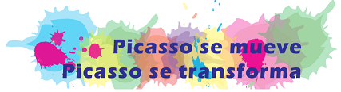

Descargar el fichero fuente
| Título | Graba tu podcast para PICASSO FM |
|---|---|
| Descripción |
Con este REA se pretende guiar al profesorado y al alumnado en la creación de sus podcasts para la radio escolar el IES Pablo Picasso (Málaga). A través de este proyecto, se pueden trabajar todas las Competencias Clave: CCL, CPlurilingüe, CMCT, CD, CPAA, CSC, SIE y CEC, a la vez que fomentamos la cohesión de la comunidad educativa, el trabajo el equipo y los valores propios que distinguen nuestro centro como un espacio de convivencia libre de cualquier tipo de discriminación.  |
| Autor | Tesi Romero |
| 'Licencia' | Creative Commons BY-SA 4.0 |
Este contenido fue creado con eXeLearning, el editor libre y de fuente abierta diseñado para crear recursos educativos.